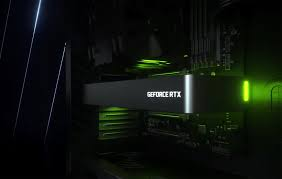

Nvidia hacks their "unhackable" driver
Early reports are piling up that cryptominers have deciphered Nvidia's anti-mining algorithm on the GeForce RTX 3060. Theoretically, it's one of the best graphics cards, if you could find one for anything close to the official $329 MSRP. The Ampere graphics card was also supposed to be less attractive to miners, but it appears that the chipmaker shot itself in the foot and inadvertently posted a driver that unlocks mining performance on the RTX 3060. Meaning, anyone can unlock full mining performance with a minimum of effort.
Nvidia was pretty confident that its anti-mining algorithm is unhackable, which naturally put out an invitation for cryptominers to try to crack it. The chipmaker even affirmed that "End users cannot remove the hash limiter from the driver. There is a secure handshake between the driver, the RTX 3060 silicon, and the BIOS (firmware) that prevents removal of the hash rate limiter." While the verification sounds like an intricate process, someone inadvertently released a workaround for it.
The simple hack reportedly requires a clean driver install with Nvidia's latest GeForce 470.05 Beta driver — some report the need to flash the GeForce RTX 3060 graphics card with a hacked vBIOS, though in our testing that's not required. Nvidia apparently messed up something in this particular driver that renders its anti-mining algorithm completely useless.
Now that the cat is out of the bag, Nvidia will likely remove the driver and pretend that it never existed. Sadly, the news is everywhere, meaning that cryptominers will be back on the hunt for GeForce RTX 3060 graphics cards. Not that they weren't already, considering what we're seeing in our GPU pricing index.